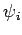
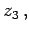
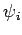
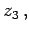

Eine Möglichkeit, eine Beziehung zwischen den drei Variablen z1,z2 und z3 zu vertafeln, besteht darin, für jede der drei Variablen eine Skala herzustellen. Die zi-Skala habe die Gleichung
Die Funktionen  und  werden so gewählt, daß die Werte der drei Variablen z1,z2 und  die die Nomogrammgleichung erfüllen, auf einer Geraden liegen, also fluchtrechte Punkte sind. Die Bedingung dafür ist, daß das von den drei Punkten (x1,y1),(x2,y2) und (x3,y3) aufgespannte Dreieck den Flächeninhalt Null hat, d.h. es muß gelten:
und  werden so gewählt, daß die Werte der drei Variablen z1,z2 und  die die Nomogrammgleichung erfüllen, auf einer Geraden liegen, also fluchtrechte Punkte sind. Die Bedingung dafür ist, daß das von den drei Punkten (x1,y1),(x2,y2) und (x3,y3) aufgespannte Dreieck den Flächeninhalt Null hat, d.h. es muß gelten:
Jede Beziehung zwischen drei Variablen z1,z2 und die sich auf die Form (2.288) bringen läßt, kann durch ein Fluchtlinien-Nomogramm dargestellt werden. Im folgenden werden einige wichtige Spezialfälle von (2.288) beschrieben.